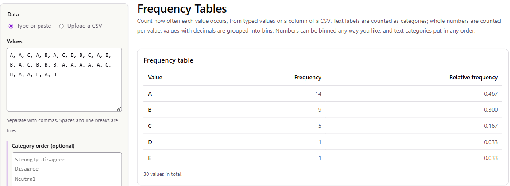

Example Project 2: Do Peer-to-Peer Borrowers Pay More Than Bank Borrowers?
Example student report (quantitative variable), STAT 251 Section 01
This is a completed example of the course project. It shows what a strong report looks like when the variable being analyzed is quantitative. It follows the six steps on the Project Description page in order, so you can compare it against the rubric section by section.
The two example projects deliberately come from very different fields: Example Project 1 uses weather records, and this one uses consumer lending. Any topic works as long as the data can be cited and your question fits a method from class. Use these examples to see the level of detail and explanation expected. Do not copy their datasets, questions, or wording.
The example was prepared with the help of Claude (Anthropic), and every calculation in it was done with the course’s stat-tools site. The screenshots come from those tools. This example also shows that a well-run test that fails to reject \(H_0\) is still a complete, strong project.
1. Dataset Selection
(A) Citations. I found the loan data on Kaggle and the benchmark on FRED. Both are data portals listed on the course project page.
Singh, U. (2023). Lending Club Loan Dataset [Data set, file
loans_full_schema.csv]. Kaggle. License CC0: Public Domain. https://www.kaggle.com/datasets/utkarshx27/lending-club-loan-dataset. Accessed September 25, 2026.
Original source of the same file: OpenIntro. loans_full_schema: Loan data from Lending Club [Data set]. https://www.openintro.org/data/index.php?data=loans_full_schema. The data were originally published by LendingClub.
Board of Governors of the Federal Reserve System (US). Finance Rate on Personal Loans at Commercial Banks, 24 Month Loan [TERMCBPER24NS]. Retrieved from FRED, Federal Reserve Bank of St. Louis, https://fred.stlouisfed.org/series/TERMCBPER24NS. Accessed September 25, 2026.
I downloaded the Kaggle file and compared it with OpenIntro’s copy at https://www.openintro.org/data/csv/loans_full_schema.csv. They contain the same 10,000 loans and the same values; Kaggle adds only a row-number column.
(B) Background.
- The lender. LendingClub is a peer-to-peer lending platform: borrowers apply online, and the loans are funded by individual and institutional investors rather than by a bank’s deposits.
- The rows and variables. Each row of the file is
one loan that was actually issued, not an application.
There are 10,000 loans, all issued from January to
March 2018, with 55 variables about the borrower and
the loan. These include:
- the borrower’s income, employment and credit history
- the loan amount, term (36 or 60 months) and purpose
- the interest rate
- a risk grade from A (lowest risk) to G (highest risk) that LendingClub assigned.
- Who collected it. LendingClub recorded these data as part of its business and published loan-level data for the public. OpenIntro prepared this 10,000-loan file for teaching, and a Kaggle user re-posted it.
- How the 10,000 loans were chosen. The documentation does not say, so I cannot claim they are a random sample of all LendingClub loans (see Limitations).
- The benchmark (FRED). The Federal Reserve reports the average rate commercial banks charge on 24-month personal loans in its G.19 Consumer Credit release. FRED lists it as a monthly series, but values are published only for February, May, August and November. The February 2018 value, from the same quarter these loans were issued, is 10.22%. I saved the full series as a CSV.
2. Question and Hypothesis Formulation
(A) Question. Peer-to-peer lenders advertise themselves as an alternative to banks. So did people who took out a 3-year LendingClub loan in early 2018 pay a higher interest rate, on average, than the 10.22% banks were charging for personal loans at the same time?
(B) Variables.
- Interest rate (
interest_rate, percent per year): quantitative, continuous, recorded to two decimal places. This is the variable I test: its mean is compared with the bank benchmark. - Grade (
grade, A–G): categorical, ordinal. I do not test it, but I use it in Part 4 to explain the shape of the interest rates, because LendingClub sets the rate mainly from the grade.
(C) Hypothesis in words. I expect the mean interest rate on 36-month LendingClub loans to be greater than 10.22%. I chose the direction before looking at any data, because the question is whether peer-to-peer borrowers pay more.
3. Sampling
(A) and (B) Method.
- Population (sampling frame). The 6,970 loans with a 36-month term. I left out the 60-month loans because their term is even further from the benchmark’s 24 months.
- Sampling method. I drew a simple random sample of n = 30 loans without replacement, using the stat-tools Simple Random Sample tool.
To repeat it:
- Open
loans_full_schema.csvin a spreadsheet. Add a columnloan_idnumbering the rows 1–10,000, keep only the rows withterm= 36, and keep only the columnsloan_id,issue_month,term,grade,loan_amountandinterest_rate. Save it as a CSV (6,970 rows). - Open the Simple Random Sample tool and upload the CSV.
- Keep all variables, set Sample size = 30 and Seed = 251, and press Draw sample. The same seed always draws the same 30 loans.

Figure 1. The Simple Random Sample tool after the draw: 30 of 6,970 loans sampled with seed 251. The first rows of the sample are shown.
(C) Justification.
- Why SRS. Every 36-month loan has the same chance of being chosen, so the sample is not tilted toward any grade, month or loan size.
- Why not stratify. Stratifying by grade would guarantee every grade appears. But the question is about the overall mean rate, and an SRS already represents the grades in proportion to how common they are.
- Independence. The loans go to different borrowers, so they are close to independent. My sample is only 30 of 6,970 loans (0.4%), so sampling without replacement causes no problems.
Possible bias.
- The sampling itself. The SRS introduces none.
- The file I sampled from. The file is a 10,000-loan subset prepared by OpenIntro, and I do not know how those loans were chosen. If they are not representative of all LendingClub loans from early 2018, my results describe this file more than LendingClub as a whole.
(D) The sample is listed in full in Appendix A.
4. Exploratory Statistical Description
(A) Descriptive statistics from the stat-tools Statistic Calculator (R’s default quartile definition):
| Statistic | Value (%) |
|---|---|
| minimum | 5.3200 |
| Q1 | 7.3500 |
| median | 9.4400 |
| mean | 10.4187 |
| Q3 | 11.9900 |
| maximum | 26.3000 |
| interquartile range | 4.6400 |
| standard deviation | 4.5963 |

Figure 2. Statistic Calculator output and boxplot for the 30 sampled interest rates (%). The red point is the high outlier (26.30%).
(B) Plots. The boxplot is in Figure 2. The histogram below came from the Make Graphs tool, using its automatic bins:

Figure 3. Histogram of the interest rate on 30 sampled 36-month LendingClub loans issued January–March 2018. The bins are 5 percentage points wide.
To understand the shape, I also counted the sampled loans by grade with the Frequency Tables tool:

Figure 4. Frequency table of the LendingClub grade for the 30 sampled loans.
| Grade | Loans | Lowest rate (%) | Highest rate (%) |
|---|---|---|---|
| A | 14 | 5.32 | 7.97 |
| B | 9 | 9.44 | 11.99 |
| C | 5 | 13.58 | 16.02 |
| D | 1 | 17.09 | 17.09 |
| E | 1 | 26.30 | 26.30 |
(C) Shape, center and variability.
- Shape. The distribution is clearly right-skewed. Most loans (19 of 30) carry rates between 5% and 10%, and a few riskier loans stretch the tail out to 26%. The mean (10.42%) is about one percentage point above the median (9.44%), which fits the skew.
- Why it is skewed. Table 2 shows where the skew comes from. LendingClub sets rates by grade, and 23 of my 30 loans are grade A or B, the low-risk, low-rate grades. The few C, D and E loans are the ones that stretch the right tail.
- Center. The median rate is 9.44% and the mean is 10.42%. The benchmark (10.22%) falls between them.
- Variability. The standard deviation is 4.60 percentage points and the IQR is 4.64 points, so the middle half of the loans had rates from 7.35% to 11.99%.
- Outliers. The upper fence is \(Q_3 + 1.5 \cdot IQR = 11.99 + 1.5(4.64) =
18.95\%\). The single grade-E loan at 26.30%
lies above it, so it is an outlier. It is a real loan, not an error:
grade-E rates in the full file run in the mid-20s. I kept it.
- The outlier pulls the mean up, which works in favour of my alternative hypothesis.
- I check its influence in Part 5.
5. Hypothesis Testing
(A) Hypotheses. Let \(\mu\) be the mean interest rate of 36-month LendingClub loans issued January–March 2018.
\[ H_0: \mu = 10.22\% \qquad\qquad H_a: \mu > 10.22\% \]
In words:
- \(H_0\): peer-to-peer borrowers paid the same average rate as the bank benchmark.
- \(H_a\): they paid more on average.
I use a significance level of \(\alpha = 0.05\).
(B) Choice of test and assumptions. I use a one-sample \(t\) test for a mean. I have one quantitative variable and want to compare its mean with a fixed benchmark. The population standard deviation is unknown, so the test uses \(s\) and the \(t\) distribution.
The assumptions are:
- Random sample. Satisfied, because the loans were chosen by SRS (Part 3).
- Independent observations. Satisfied: the loans go to different borrowers, and the sample is a tiny fraction of the frame.
- Approximately normal population, or a large enough sample. This is the assumption to watch. The rates are right-skewed, with one outlier. With \(n = 30\), the Central Limit Theorem makes the sampling distribution of \(\bar{x}\) approximately normal for moderate skew like this, so the \(t\) test is reasonable. I also rerun it without the outlier below.
(C) Computations.
Step 1: observed statistics (Table 1): \(n = 30\), \(\bar{x} = 10.4187\%\), \(s = 4.5963\%\).
Step 2: standard error. \[ SE = \frac{s}{\sqrt{n}} = \frac{4.5963}{\sqrt{30}} = \frac{4.5963}{5.4772} = 0.8392 \]
Step 3: test statistic. \[ t_{obs} = \frac{\bar{x} - \mu_0}{s/\sqrt{n}} = \frac{10.4187 - 10.22}{0.8392} = \frac{0.1987}{0.8392} = 0.237 \]
Step 4: degrees of freedom and critical value. \(df = n - 1 = 29\). For an upper-tail test at \(\alpha = 0.05\) the critical value is \(t_{29,\,0.95} = 1.699\), and we reject \(H_0\) only if \(t_{obs} \geq 1.699\).
Step 5: p-value. \(p = P(t_{29} \geq 0.237) = 0.407\).
Step 6: 95% confidence interval for \(\mu\) (\(t_{29,\,0.975} = 2.045\)): \[ \bar{x} \pm t_{29,\,0.975}\, SE = 10.4187 \pm 2.045(0.8392) = 10.4187 \pm 1.716 = (8.70\%,\ 12.14\%) \]
I ran the test in the stat-tools One Sample Tests tool with these settings:
- Mean, hypothesis test, upper tail, \(\alpha = 0.05\), \(\mu_0 = 10.22\).
- Data: the sample CSV uploaded, with the
interest_ratecolumn chosen.
It reproduces every value above:

Figure 5. One Sample Tests tool output: SE = 0.8392, df = 29, t = 0.2367, critical value 1.6991, p = 0.4073, and 95% CI (8.7024, 12.1350). The observed t falls far short of the shaded rejection region.
| Quantity | Value |
|---|---|
| Sample mean \(\bar{x}\) | 10.42% |
| Standard error | 0.839 |
| Degrees of freedom | 29 |
| Test statistic \(t_{obs}\) | 0.237 |
| Critical value \(t_{29,\,0.95}\) | 1.699 |
| \(p\)-value | 0.407 |
| 95% CI for \(\mu\) | (8.70%, 12.14%) |
Effect of the outlier. I removed the 26.30% loan and reran
the same \(t\) test in R with
t.test(). That gives \(n =
29\), \(\bar{x} = 9.87\%\),
\(s = 3.54\%\) and \(t = -0.53\). The conclusion does not
change, and without the outlier the sample mean even falls
below the benchmark.
6. Conclusion
(A) Decision. The test statistic \(t_{obs} = 0.24\) is well below the critical value 1.699, and \(p = 0.41 > \alpha = 0.05\). So I fail to reject \(H_0\).
(B) Interpretation. My sample does not give convincing evidence that 3-year LendingClub borrowers in early 2018 paid more, on average, than the 10.22% banks were charging for personal loans.
- Rates vary a lot. The sample’s average (10.42%) was only 0.2 points above the benchmark. Rates vary so much from loan to loan (SD about 4.6 points) that a difference that small could easily come from chance alone.
- Plausible values. The 95% confidence interval says the true average rate is plausibly anywhere from about 8.7% to 12.1%. That range includes 10.22%.
- This does not prove the rates are equal. “Fail to reject” means my data could not tell the two apart, not that they are the same.
- The size of difference I could detect. To reject \(H_0\), my sample mean would have had to be at least \(10.22 + 1.699(0.8392) \approx 11.65\%\). So with 30 loans this study could only have picked up a difference of roughly 1.4 percentage points or more. A real but smaller difference could easily go undetected.
(C) Limitations.
- The benchmark is not a perfect match.
- The bank rate is for 24-month loans, and mine are 36-month loans.
- More importantly, banks and LendingClub serve different borrowers. Banks turn away many riskier applicants, while LendingClub lends across grades A–G. So even if a difference were found, it would not show that LendingClub charges the same borrower more. The two groups of borrowers differ, which is a classic confounding problem.
- Skew and small sample. The right skew and the outlier make \(n = 30\) adequate but not generous for a \(t\) test. A small sample also gives the test little power to detect modest differences (see above).
- The data file. The 10,000 loans are a subset whose selection method is not documented. They cover only three months, and only loans that were actually issued. Applicants who were rejected, or who turned down a high-rate offer, are not in the data.
Because you have the whole data file, you can check a sample’s conclusion against it, which is rarely possible in real research. The mean rate over all 6,970 36-month loans in the file is 11.24%, about one point above the benchmark. So in this file \(H_0\) is actually false, and this sample’s test missed it. That is a Type II error.
It was not bad luck so much as low power. With a true difference of about 1 point and an SD of about 4.4 points, a sample of 30 has only about a 34% chance of rejecting \(H_0\). About 117 loans would be needed for an 80% chance. The student’s conclusion is still correct as written: they said the evidence was not convincing, not that the rates were equal. That is exactly the right way to report a non-significant result.
Appendix A: the sample
| Draw order | loan_id | Issued | Grade | Loan amount ($) | Interest rate (%) |
|---|---|---|---|---|---|
| 1 | 94 | Jan-2018 | A | 20,000 | 7.97 |
| 2 | 1981 | Mar-2018 | A | 13,000 | 7.97 |
| 3 | 594 | Feb-2018 | C | 9,525 | 15.05 |
| 4 | 1924 | Feb-2018 | A | 6,000 | 7.35 |
| 5 | 5976 | Feb-2018 | B | 40,000 | 9.93 |
| 6 | 2158 | Feb-2018 | A | 20,000 | 6.72 |
| 7 | 143 | Mar-2018 | C | 4,800 | 16.01 |
| 8 | 5381 | Jan-2018 | D | 1,000 | 17.09 |
| 9 | 3935 | Jan-2018 | B | 2,500 | 11.99 |
| 10 | 1424 | Mar-2018 | C | 5,525 | 16.01 |
| 11 | 7377 | Mar-2018 | A | 7,600 | 7.96 |
| 12 | 4470 | Jan-2018 | B | 3,600 | 11.99 |
| 13 | 3609 | Feb-2018 | B | 34,425 | 10.41 |
| 14 | 151 | Feb-2018 | A | 13,000 | 5.32 |
| 15 | 3814 | Mar-2018 | C | 3,200 | 13.58 |
| 16 | 9729 | Jan-2018 | B | 4,000 | 11.99 |
| 17 | 5731 | Feb-2018 | B | 23,100 | 9.44 |
| 18 | 4641 | Mar-2018 | B | 8,900 | 9.92 |
| 19 | 2468 | Jan-2018 | A | 10,000 | 6.08 |
| 20 | 5821 | Jan-2018 | A | 22,000 | 5.32 |
| 21 | 1115 | Jan-2018 | A | 10,000 | 7.35 |
| 22 | 1727 | Feb-2018 | A | 20,000 | 7.96 |
| 23 | 9154 | Mar-2018 | A | 20,000 | 7.34 |
| 24 | 7390 | Feb-2018 | C | 12,000 | 16.02 |
| 25 | 8867 | Jan-2018 | B | 25,000 | 9.44 |
| 26 | 9129 | Feb-2018 | A | 8,000 | 6.08 |
| 27 | 3660 | Jan-2018 | A | 20,000 | 7.97 |
| 28 | 5429 | Jan-2018 | E | 30,150 | 26.30 |
| 29 | 983 | Jan-2018 | A | 24,725 | 6.08 |
| 30 | 1470 | Mar-2018 | B | 15,000 | 9.92 |
AI Use Disclosure
The project requires you to disclose any AI use. This section is an illustration of the format. It is here so you can see what a complete disclosure contains. Write yours about what you actually did.
- Service provider: Anthropic (Claude).
- Prompts I used:
- “Where can I find the average interest rate banks charge on personal loans, month by month?”
- “My t test failed to reject. How do I explain that in plain language without saying the two means are equal?”
- How I used it.
- Prompt 1 pointed me to FRED. I found the series, checked it on the Federal Reserve’s page, and chose the February 2018 value myself.
- Prompt 2 helped me word Part 6(B). I rewrote its suggestion in my own words and checked it against my lecture notes on significance tests.
- All calculations were done with the stat-tools site and my own hand
calculations in Part 5(C). The one exception is the outlier check, which
I ran in R with
t.test(). No AI-generated numbers, figures or data appear in this report.
- Citation: Anthropic. (2026). Claude [Large language model]. https://claude.ai. Responses to prompts 1 and 2 above, accessed September 2026.